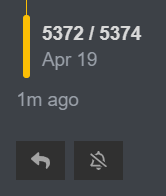

Because I want to bleed someone after we get an unseen out so I can actually be fucking confirmed
Oh what
No time
You need to confirm you aren’t mm today
Just do what you want. I’m actually done.
I’m muting the thread.
put yourself in the scum shoes
“if i was sorcerer, who would i bomb”
you’d get answers like aelin, marl, me
not people like SDA and dota
I flip flopped on wind and I was correct
I flip flopped on Eli and I was correct
if you are town your first assessment is probably wrong, and you should listen to other people.
1 Like
he already is, atleast partially im pretty sure
Better to bleed now
If you aren’t sorc and you try to bleed sorc, they can’t bleed anyway so you might catch them
So just do it
2 Likes
that was sarcasm
it’s because he keeps shrieking about me being mm/Sorc/whatever even though I’m basically confirmed
2 Likes
Oh OK lol
Yeah unless you were converted last night, there’s no way youre unseen

I’m genuinely just leaving and letting yall decide what to do this day because I don’t give a single fuck anymore.
Pkr idc who you bleed so long as it gets done
I have decided that you should bleed to confirm you aren’t sorc
I’ll spam check you and make you immune to conversion tonight
Read my role
thank you for this very insightful and towny dialogue
nah we just roleblock pkr and kill him tomorrow
In no universe
Almost all nks are occ immune
I don’t think Sorc is occ immune